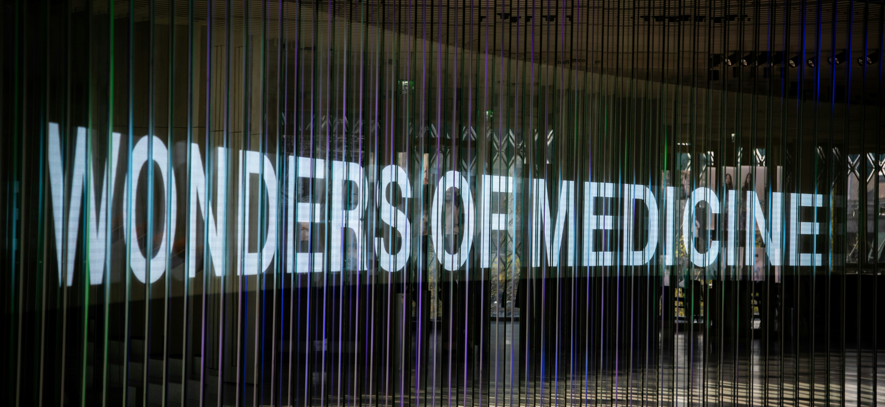

MedAssistKI ©
MedAssistKI© unterstützt Ärzte und Kliniken mit innovativer künstlicher Intelligenz bei medizinischen Analysen und Diagnosen.
MedAssistKI Solutions GmbH wurde 2026 in Wien gegründet und spezialisiert sich auf KI-gestützte Lösungen für Krankenhäuser und medizinische Einrichtungen.
Unser Ziel ist es, Ärzte bei administrativen Aufgaben und medizinischen Entscheidungen zu unterstützen.

Wortmarke: „MedAssistKI“
Bildmarke: Medizinisches KI-Logo
Farbmarke: Dunkelblau, Gold und Dunkelrot
Das Logo stellt Äskulapstab mit dem Zahnrad im Hintergrund dar, was die Verbindung zwischen Medizin und Technologien zeigt.
Die Farben Dunkelblau, Gold und Dunkelrot stehen für Wissen, Innovation und Blut
Klasse 9: Medizinische Software
Klasse 42: Entwicklung von KI-Software
Klasse 44: Medizinische Dienstleistungen
Bei der Erstellung von Marken wurde darauf geachtet, dass keine bestehenden Marken verletzt sind.